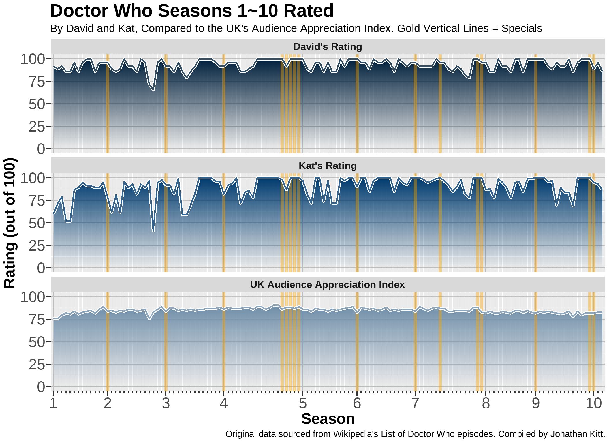
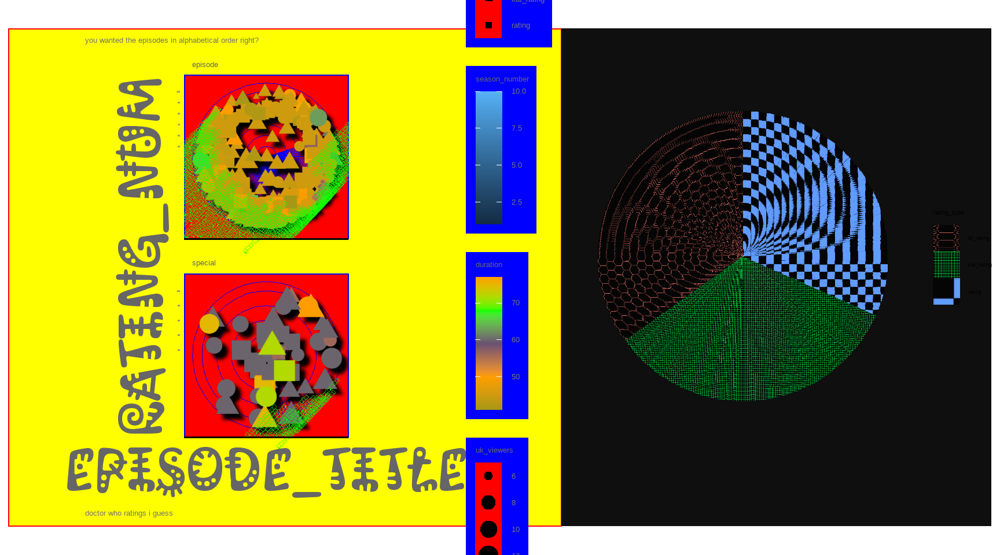

Show code
library(tidyverse) # for many things
library(here)
library(ggthemes)
library(ggpattern) # I must do a gradient again!!
library(patchwork)
library(ggfx) # for drop shadows :)
library(showtext) # for creative text!Created on: 2026-10-13
Last updated on: 2026-10-18
Today I will be sharing every Doctor Who episode my partner David and I have watched and ranked, compared with the UK’s Audience Appreciation Index.
The base data is sourced from Tidy Tuesday’s Doctor Who Episodes Dataset. However, all David & Kat rating information was manually entered into a separate spreadsheet from our personal ratings list, and was then combined.
Some new libraries I am testing out today are “ggfx” and “showtext”. The first one does fun effects for ggplots, and the second one is used to load in different text font styles.
library(tidyverse) # for many things
library(here)
library(ggthemes)
library(ggpattern) # I must do a gradient again!!
library(patchwork)
library(ggfx) # for drop shadows :)
library(showtext) # for creative text!Loading in three datasets from the tidy tuesday Doctor Who dataset, from 2023-11-28.
# This data comes from tidytuesday's Dr. Who dataset https://github.com/rfordatascience/tidytuesday/blob/main/data/2023/2023-11-28/readme.md
#Only some of the available datasets were used due to missing/unmatching data.
directors <- readr::read_csv('https://raw.githubusercontent.com/rfordatascience/tidytuesday/main/data/2021/2021-11-23/directors.csv')
episodes <- readr::read_csv('https://raw.githubusercontent.com/rfordatascience/tidytuesday/main/data/2021/2021-11-23/episodes.csv')
writers <- readr::read_csv('https://raw.githubusercontent.com/rfordatascience/tidytuesday/main/data/2021/2021-11-23/writers.csv')Here I join the three default tables and add the rating data as well. Then, I convert David’s ratings from A-F scale to match the other rating sets, which are ranged from 0-100. The conversion values were selected by David to appropriately reflect his rating numerically.
# Take episodes, which has the most data
episodes |>
# add the directors to the episodes list
full_join(directors, by = "story_number") |>
# then add the writers to that list
full_join(writers, by = "story_number") -> combined_drwho
# bring in the rating data set David and I created by adding our rankings to each unique episode title in a .csv:
drwho_ratings <- read.csv(here("goodplot-badplot", "Data", "kat_david_drwho-ratings.csv"))
# combine our ratings with the dataset:
combined_drwho |>
full_join(drwho_ratings, by = "episode_title") |>
# edit David's rankings to be numbers instead of letters (I tried to make this a function but couldn't figure it out) :(
mutate(bf_rating = ifelse(bf_rating == "A+", "100", bf_rating)) |>
mutate(bf_rating = ifelse(bf_rating == "A", "96", bf_rating)) |>
mutate(bf_rating = ifelse(bf_rating == "A-", "92", bf_rating)) |>
mutate(bf_rating = ifelse(bf_rating == "B+", "89", bf_rating)) |>
mutate(bf_rating = ifelse(bf_rating == "B", "86", bf_rating)) |>
mutate(bf_rating = ifelse(bf_rating == "B-", "82", bf_rating)) |>
mutate(bf_rating = ifelse(bf_rating == "C+", "79", bf_rating)) |>
mutate(bf_rating = ifelse(bf_rating == "C", "76", bf_rating)) |>
mutate(bf_rating = ifelse(bf_rating == "C-", "72", bf_rating)) |>
mutate(bf_rating = ifelse(bf_rating == "D+", "69", bf_rating)) |>
mutate(bf_rating = ifelse(bf_rating == "D", "66", bf_rating)) |>
mutate(bf_rating = ifelse(bf_rating == "D-", "62", bf_rating)) |>
mutate(bf_rating = ifelse(bf_rating == "F", "0", bf_rating)) |>
# edit my ratings to not go over 100: (some of them were over 100 because at the time I was not practicing good data entry)
mutate(kat_rating = ifelse(kat_rating >= 100, "100", kat_rating)) |>
# remove any non-rated episodes, as we have not finished watching
filter(bf_rating != "NA") |>
# make the UK rating column into characters rather than numbers
mutate(rating = as.character(rating)) |>
# remove duplicate episodes due to multiple writers/directors, which sadly will remove the writers/directors, but perhaps I will include those in the bad plot later. (note: I did not end up using them)
group_by(episode_title, season_number, episode_number, bf_rating,
kat_rating, story_number, type, first_aired,
uk_viewers, rating, production_code, duration) |>
summarise() |>
# pivot longer for easier plotting
pivot_longer(cols = c("bf_rating","kat_rating","rating"),
names_to = "rating_type",
values_to = "rating_num") |>
# make sure the rating number is an integer to make the scale correct
mutate(rating_num = as.integer(rating_num)) |>
# remove any rows with no data & assign it to a variable
filter(story_number != "") -> drwho_data_cleanI’ve decided to do the good plot first, as I believe the bad one is so bad that it is painful to have to look at it first.
# due to the showtext package, need to set this for the good plot to ggsave or else the font saves very small:
showtext_auto()
showtext_opts(dpi = 250)
drwho_data_clean |>
ggplot(mapping = aes(x = story_number,
y = rating_num,
group = rating_type, # set up the base graph
color = rating_type,
fill = rating_type)) +
geom_area_pattern(aes(pattern_fill = rating_type,
pattern_fill2 = rating_type), # make the really cool gradient
pattern_fill = "NA",
pattern_orientation = "vertical",
pattern = "gradient")+
geom_vline(xintercept = ifelse(drwho_data_clean$type == "special", # identify the specials with vertical lines that highlight them
drwho_data_clean$story_number,
"167"), # just setting the alternative as a number that should already be plotted, since I cannot get NA or other alternative to work... Is there a way to use if without else?
color = "orange",
linewidth = 2,
alpha = 0.4)+
geom_line(linewidth = 2, color = "white")+ # white underline
geom_line(linewidth = 1, alpha = 0.8)+ # colorful top line
theme_gray()+
scale_color_manual(values = c("#00203c", # A Doctor Who colorset!
"#003b6f",
"#6f8ea9"))+
scale_pattern_fill2_manual(values = c("#00203c",
"#003b6f",
"#6f8ea9"))+
scale_fill_manual(values = c(NA,NA,NA))+ # eliminates color errors (still not sure how this works)
facet_wrap(~rating_type,
ncol = 1,
labeller = labeller(rating_type = c(bf_rating = "David's Rating", # facet wrap and label
kat_rating = "Kat's Rating",
rating = "UK Audience Appreciation Index")))+
scale_x_discrete( # set ticks at the first episode of each season
breaks = c("157", "167", "178", "188", "203", "213", "225", "242", "253", "264"),
labels = c("1", "2", "3", "4", "5", "6", "7", "8", "9", "10"),
minor_breaks = scales::breaks_width(1)
)+
labs(title = "Doctor Who Seasons 1~10 Rated", # set labels
subtitle = "By David and Kat, Compared to the UK's Audience Appreciation Index. Gold Vertical Lines = Specials",
x = "Season",
y = "Rating (out of 100)",
color = "Who's Rating",
caption = "Original data sourced from Wikipedia's List of Doctor Who episodes. Compiled by Jonathan Kitt.")+
theme(title = element_text(size = 15, face = "bold"),
strip.text = element_text(size = 10, face = "bold"),
axis.text = element_text(size = 15),
axis.ticks = element_line(linewidth = 0.8), #add theme changes to make the data clearer
axis.ticks.length = unit(6, "pt"),
panel.grid.major = element_line(linewidth = 0.8, color = "gray"),
axis.minor.ticks.length = rel(0.3))+
guides(color = "none",
fill = "none",
pattern_fill = "none", # Get rid of all the legends
pattern_fill2 = "none",
x = guide_axis(minor.ticks = TRUE)) # this makes the minor ticks on the x axis show up!
# save figure
# commenting this out so it uploads okay
#ggsave(here("goodplot-badplot", "Output", "kv_goodplot.png"),
# width = 11,
# height = 8)
Figure 1 above is a good plot because it cleanly shows the similarities and differences of the three different rating sources while also providing context about which episodes are specials, in case that may change the outcome of the rating.
Here are some more details:
Contains a title, subtitle, and other useful information labels
Fonts are consistent and not distracting
Reasonable sized text (axis labels)
Sized up the tick labels as well to make them more readable, added minor tick marks to show the differences in the number of episodes per season
No overlapping text
No legends needed due to an appropriate amount of data being conveyed
Line plot is readable
Colors are pleasant, clear, and themed with the data. Data are easy to view
Nice gradient that I learned how to do in another assignment (Thanks again Mica!) and now I want to do it for all line plots
Episodes are in watch order/story order
Y-axis scales are consistent across facets, making it easier to compare across the three ratings accurately.
For this plot, I will break every rule I can think of. More details below.
# need to add some new fonts...
font_add_google("Honk", "honk")
font_add_google("Kablammo", "kablammo")
# this is needed to have the figure save as the correct size
showtext_opts(dpi = 75)
# and plot!
# starting with the same data as last time
drwho_data_clean |>
# base plot
ggplot(mapping = aes(x = episode_title, # somewhat similar data structure, but using the full title instead of the story_number, to make the labels absolutely impossible to read.
y = rating_num,
color = duration,
fill = season_number, # Added random stuff here, mostly for extra pointless legends.
shape = rating_type,
size = uk_viewers))+
with_shadow(geom_jitter(width = 50), sigma = 3)+ # drop shadow!
coord_polar("x")+ # make the coordinates polar
theme_gdocs()+ # use a really boring theme (google docs)
labs(subtitle = "you wanted the episodes in alphabetical order right?", # some labels but terrible
caption = "doctor who ratings i guess")+
facet_wrap(~type,
ncol = 1, # facet wrap to separate episodes/specials to make it extra confusing
scales = "free")+ # set the scales free to make the data pattern un-intuitive
theme(axis.title = element_text(family = "kablammo", # I picked these fonts partly because the names were silly
face = "oblique",
size = 100),
axis.text.x = element_text(family = "honk", # honk font
colour = "#15ff00",
angle = 47), # angle the axis tick text weirdly
axis.text.y = element_text(size = 4,
color = "blue"),
panel.background = element_rect(fill = "red",
colour = "blue"), # make the colors of everything terrible
legend.background = element_rect(fill = "blue"),
panel.grid.major = element_line(color = "blue",
linewidth = 0.05), # tried to make the grid super small
plot.background = element_rect(color = "red",
fill = "yellow"))+
scale_colour_continuous(palette = c("#a69716","#ff9d00","#685170","#15ff00","#ff9d00")) -> plot1 # set as the first plot... of course there's more! We don't have a pie chart yet!
# call the data again
drwho_data_clean |>
ggplot(mapping = aes(x = "",
y = rating_num,
pattern_type = rating_type, # real basic stuff, but I picked columns that would make for very strange results, as there are a large number of different y values.
pattern_fill = rating_type))+
geom_bar_pattern(pattern = "magick", # add a pattern to the slices
stat = "identity")+
scale_pattern_type_manual(values = c(bf_rating = 'hexagons',
kat_rating = 'crosshatch',
rating = 'checkerboard'))+
coord_polar("y", start = 0) +
theme_void()+
theme(plot.background = element_rect(fill = "#0F0F0F")) -> plot2
plot1 + plot2
#commenting this out or it won't upload properly
#ggsave(here("goodplot-badplot", "Output", "kv_badplot.png"),
# width = 11,
# height = 8)
#just for exporting:
#library(rsconnect)
#rsconnect::deployDoc(
# doc = here("goodplot-badplot", "Scripts", "goodplot-badplot.qmd"), # path to your .qmd
# appTitle = "OCN 682 - Kat Viehl - Good Plot / Bad Plot" # give it a clear title
#)
No real title, only a subtitle
Overuse of creative fonts
Over-sized text (axis labels)
Too-small text (y axis tick labels)
Overlapping text & too many variables (x axis tick labels)
Too many legends, plotting too much information
Jitter plot plus tiny grid size means the data is completely unreadable
Bright/ugly colors and nearly black background under black text
Not adjusting labels from default dataframe format
Legends clip off the plot
The continuous colors picked for “duration” are not intuitive and display the same color for different values
Polar coordinate system makes no sense
Made the geom_jitter width super wide, which pushed the gridlines out of position
Needless drop shadows on the points
Continuous scale applied to discrete values (season_number), which doesn’t even show up on the plot but has a legend
Different shapes that overlap so badly it is impossible to see which ones are which
Needlessly angled, impossible to read tick-label-text
Pie Chart added on the right containing over-compressed ggpattern textures that does not add any value at all to the plot.
Episodes are in alphabetical order instead of sorted by season+episode number
Scales of the two facet_wrap plots do not match despite the data being on the same scale, making it misleading (most of the points seem clustered at “lower” ratings in the specials, which does not reflect the actual data patterns)